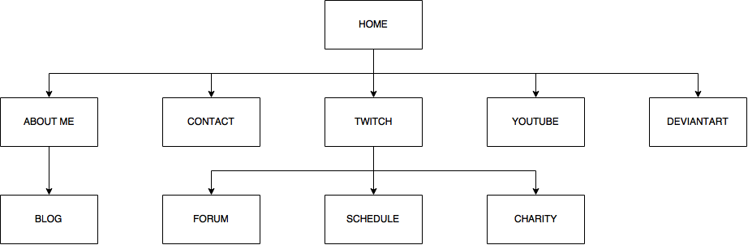

VeeDub Runner
VeeDub Runner
CMST 386 Project Proposal
This page answers questions pertaining to my final project website.
Client and Topic
- What type of website will I be creating?
- My final website project will be a personal site dedicated to my online content creation hobby that I hope to one day turn into a career.
Development Process and Engagement
- Am I creating this page for someone else?
- This page will be for me, so no outside involvement will be necessary.
Testing
- How will I test the page before launch?
- The site will be validated by W3C as well as tested on all major browsers locally prior to launch.
Description
- My website will include various aspects of my content creation online, including my Twitch, Youtube, and DeviantArt pages. The site
will also include a blog, schedule, and pages describing the charity work I currently do online.
- The site's purpose is to inform my current audience of the other activities I do online, provide a schedule of my activities, and
provide a way for viewers to communicate with me.
- The intended audience for the site will be my current Twitch followers, Youtube subscribers, and those who frequent my DeviantArt page.
The majority of the audience will come from my Twitch channel, so the website's focus will be around my Twitch activities and tools
for that audience to use.
- The site will include a weekly (minimum) blog, images and video of my activities, and a forum page once the audience grows enough to warrant it.
Growth Potential and Maintenance
- Do I see this as a site that will grow and evolve over time?
Yes. If I manage to create a suitable environment and allocate enough time at home, I should be able to make content creation more than
a small hobby, which will eventually attract more viewers and visitors.
- Are there things I can do to make it easier to maintain?
Of course. By creating neat, aeasy to read code and sharing stylesheets, I can make it simple to add and remove content and to change the style
and layout of the site.
There will likely be at least weekly maintenance (for the blog post) until I can get back-end support to handle databases. Once the forum
is live, I will need moderator support to control content in posts. Also, depending on how user accounts are handled, I may need to monitor extra
security software for updates and fixes.
Organization
- How will I organize my content?
- The site will be organized by the site where my content is hosted. Sub-categories will fall under specific content pages as well
as being accessible from the home page.
- 
- I will use a horizontal navbar with dropdown for sub-pages. The menu will be universal for ease of updating. Navigation will consist
primarily of the menu bar, but in-text links will also be provided whenever a different page is discussed on the site.
Web Hosting
- The site will be hosted on github as it is now, but future backend support will have to be sourced elsewhere
- My hope is that the forum section will be able to utilize existing Twitch user information through APIs. If not, a secure model
to store user information will need to be sourced.
- JavaScript and Jquery will be necessary, as well as any other languages needed to access API information.
Marketing
- How will I market this site?
- The site will not be directly marketed other than links provided on my content pages on Twitch, etc.
SEO will be utilized through proper header usage and appropriate titles, though the majority of traffic will come from other sites.
Security
- Do I plan on e-commerce?
No. There are many options for outsourcing merchandise that are well established.
- Will content on the site be password protected?
Possibly. If API checking does not work for the forums pages, I will have to get backend support and utilize user account creation.
- How will I secure the site? I currently know nothing about web security, but can assume that github's basic security would suffice
for a non-interactive site.